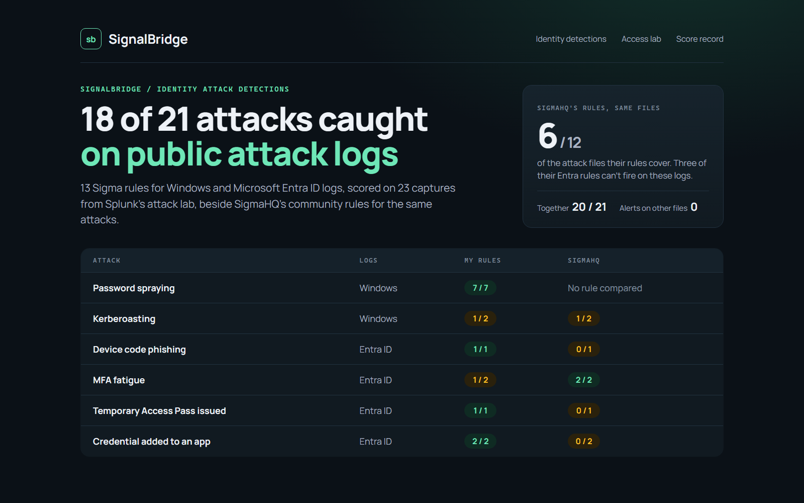
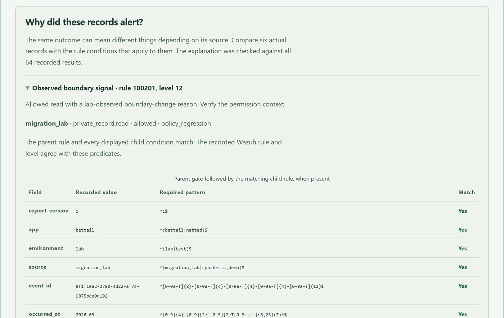
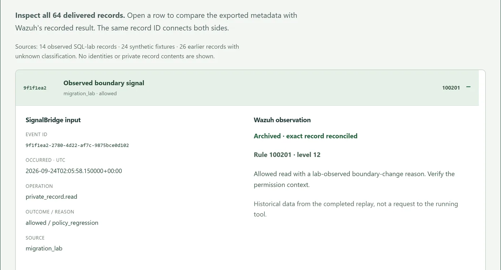

SignalBridge
Detection rules that catch identity attacks in the logs a security team already collects: Windows domain controller events and Microsoft Entra ID sign-in and audit logs. I tested them on public attack data I didn't write and compared them with the security community's rules for the same attacks. A lab version, run against real Keycloak, Wazuh, OWASP ZAP and Shuffle, catches access that continues after it was removed.
- 18 of 21public attack captures caught by my identity rules (12 of 13 had test data), with no alerts on other captures
- 3community Entra rules I found can't fire on the public exports I tested
- 4test writes that went through after the user's permission was withdrawn mid-request, until I fixed the race
- 1critical case, opened when an account AccessOps had offboarded was used again


Key decisionTest the rules on attack data I didn't write, write down what each should catch before the first run, and report that run beside the fixes.
What it shows
Identity attack detection
13 Sigma rules for password spraying, Kerberoasting, MFA fatigue, device code phishing and backdoored app credentials, mapped to MITRE ATT&CK.
Tested on data I didn't write
23 public attack captures from Splunk's attack lab. I wrote down what 12 of the 13 rules should catch before the first run (W5 came after it), and CI re-scores every rule on each change.
Checked against the community
SigmaHQ's rules for the same attacks ran on the same logs. Three of their Entra rules can't fire on these exports as written, and one attack slipped past both their rule and my first draft.
Real security tools
In the lab, Keycloak sign-in with MFA, a Wazuh SIEM, OWASP ZAP and a Shuffle SOAR workflow, with one finding taken from case to an independently reviewed fix.
Identity attack detections
The rules read the logs most security teams already collect: Windows domain controller Security events and Microsoft Entra ID sign-in and audit logs. I scored them, and SigmaHQ's community rules for the same attacks, on 23 public attack captures from Splunk's attack lab.
| Attack | Logs | My rules | SigmaHQ's rules |
|---|---|---|---|
| Password spraying | Windows | 7 of 7: one only by W5, added after the first run | No rule in the comparison |
| Password spraying | Entra ID | 1 of 2: missed a spray spread across many addresses | No rule in the comparison |
| Kerberoasting | Windows | 1 of 2: a single ticket is below the burst threshold | 1 of 2: missed the burst run as SYSTEM |
| Kerberos pre-authentication turned off | Windows | 1 of 1 | No rule in the comparison |
| Sign-in attempts on disabled accounts | Windows | 1 of 1 | 0 of 1: reads only logon codes, not Kerberos |
| MFA fatigue | Entra ID | 1 of 2: two failures is below my threshold of three | 2 of 2 |
| Device code phishing | Entra ID | 1 of 1 | 0 of 1: looks for a field these exports don't have |
| Consent to a malicious app | Entra ID | 1 of 1 | 1 of 1 |
| New MFA method registered | Entra ID | 2 of 2 | 2 of 2 |
| Temporary Access Pass issued | Entra ID | 1 of 1 | 0 of 1: looks for a field these exports don't have |
| Credential added to an app | Entra ID | 2 of 2 | 0 of 2: looks for a field these exports don't have |
The disabled-account capture is also a password spray and counts once in the totals. Overall, my rules caught 18 of 21 attack files and SigmaHQ's caught 6 of the 12 their rules cover; together, 20 of 21. No rule fired on a file it wasn't meant for. Twelve of my 13 rules had test data; E8, for sign-ins to disabled Entra accounts, still needs a test-tenant export.
Decided before the first run
For my first 12 rules, I wrote down which files each should fire on before the first run. That run caught 17 of 22 expected pairs and showed two design flaws, which I fixed instead of loosening any threshold. W5 and its expectations came after; the README describes the first run, but its raw output isn't published.
The attack that hid behind the computer
Kerberoasting run as SYSTEM asks for tickets under the computer's account, which my first draft ignored, like SigmaHQ's rule. My rule now counts every requester and alerts on the burst.
Rules, findings and method · Score record · Pinned sources and expectations
How the lab works
SignalBridge started as a monitor for two of my own apps, BetTail and Netted. For the lab I built two test apps, one for documents and one for expenses, with a deliberate access bug, so a real failure could be caught from start to finish.
Everything runs on one PC: pinned images on an internal Docker network with no internet route, and Shuffle in a separate VM with no network adapter.
Follow an event Choose a stage
Stage 01 / App event
What did the app see?
Each test app sends a small event: which account tried to read which record, and whether it was allowed. Accounts are pseudonyms, and the event has no fields for names, emails, IP addresses or record contents.
A signature proves which app sent the event, not that the app reported correctly.
Stage 02 / Signed intake
Can the event be trusted?
Every event is signed with its app's shared secret key (HMAC-SHA-256) and checked against a fixed schema. Events older than 5 minutes are rejected, an exact repeat is accepted once, and a reused ID with different content is refused.
Each app can send 600 new events a minute; more are refused.
Stage 03 / Detection rules
Why did this open a case?
Five rules look for repeated failed reads, reads after a permission was removed, slow probing across many records and one record denied to several accounts. Each case keeps the events that triggered it.
Activity below a rule's threshold isn't flagged; the evaluation counts those misses.
Stage 04 / Analyst review
Who can close it?
Viewer, analyst and reviewer roles are scoped to each app. Analysts assign the case, open a fix task and import a retest; a different reviewer approves the fix.
The console is built for a local lab, not the public internet.
What testing found
Each of these came from a check that failed, and each fix is in the repository. Lessons learned covers the sign-in policy bug and the Wazuh log limit; the write race has its before-and-after record and 13 regression tests.
| Problem | Before the fix | Now |
|---|---|---|
| Write race | With a role, membership or account withdrawn after the access check, 4 of 4 test writes still went through | Permissions re-checked inside the transaction; 13 regression tests |
| Sign-in blocked | A keyboard-only browser test showed the console's security policy blocked the redirect to Keycloak | Policy fixed, with its own regression test |
| Generated Splunk query | pySigma's Splunk output for one rule compiled, but Splunk refused to run it | Hand-written Splunk query (SPL) with rolling time windows; generated and hand-written queries labeled |
| Default lab password | Scanner triage flagged a default password in the BetTail lab database; a configuration check found 3 backend services set to publish ports | All 8 database role passwords rotated and retested, host ports removed, memory and CPU capped |
| Wazuh log limit | The collector stopped at 10.6 hours of a planned 24-hour run | Log-folder limit fixed |
| Accessibility | An axe scan found six kinds of issue, including a nearly invisible link | 0 violations on 19 pages, light and dark, on 5 October; the 3 evidence-viewer pages have changed since |
Lab results
October 1–5, 2026, in an isolated lab with synthetic data. Each row links the record its run wrote.
| Run | Result | Record |
|---|---|---|
| Test apps with a planted access bug | 23 events processed; the bug opened one case | Run |
| Keycloak sign-in, password and TOTP | 28 protocol checks and 5 browser checks passed | Run |
| Wazuh collection | 8 alerts, each raised once; nothing lost after a collector stop | Run, recovery |
| OWASP ZAP | 1 finding on the faulty build, none after the fix | Run |
| Finding to verified fix | Self-review refused; an independent reviewer approved | Run |
| Shuffle SOAR workflow | Replayed, changed, wrong-app and stale requests refused | Run |
| PostgreSQL races and a killed worker | 14 checks passed, no partial cases | Run |
| Continuous run | 27,118 events delivered over 13.5 hours | Run |
| Prometheus and Grafana | Backlog alerts fired and cleared; 24 checks passed | Run |
| Lab rules on 48 scenarios I wrote | 71% precision (15 of 21), 65% recall (15 of 23); a regression check, not real-world accuracy | Run |




Detection as code
I rewrote the five lab rules as Sigma, tagged with the MITRE ATT&CK techniques for data taken from information repositories (T1213) and, on the two revocation rules, misuse of valid accounts (T1078). I compiled them with pySigma, Sigma's query converter, and ran them in real engines against the same 48 scenarios. Running them found a problem compiling alone didn't: Splunk refused pySigma's query for one rule.
| Engine | Matched the Python rules | Why not all 48 |
|---|---|---|
| KQL in Microsoft's Kusto emulator | 48 of 48 | — |
| Hand-written SPL in Splunk Free | 45 of 48 | Splunk drops events exactly on a window edge |
| Compiled Sigma in SQLite | 45 of 48 | Sigma can't express a re-granted permission |
| pySigma's generated SPL | 40 of 48 | Splunk refused one query; fixed time bins missed two |
Sigma rules and engine results · Splunk run · Kusto run · Replay report
Access after departure, from AccessOps
AccessOps, my offboarding project, sends signed security events in the Shared Signals standard (CAEP and RISC) when it cuts off a departing employee and when their account is used afterward. SignalBridge polls them over TLS, verifies each signature, issuer and audience, stores each event once and only then acknowledges it.
38 events verified, none refused
Two live rounds against the running AccessOps lab. Each real poll followed a dry run that verified without storing anything.
A critical case when it mattered
In round two, a contained test account was re-enabled and used, and SignalBridge opened a critical "access after departure" case. Round one's 3 critical cases were test-induced: the sender's test backdated each departure by 5 seconds.
Receiver design · Dry run · Round 1 · Round 2
Limits
- The identity rules ran on attack-lab captures through SQLite, not in Splunk or Sentinel. No alerts on the wrong files is a sanity check, not a false-alarm rate for a real network.
- The lab used synthetic data in an isolated network on one PC; it is not a production deployment.
- I wrote the 48 evaluation scenarios knowing the rules, so the scores catch regressions rather than measure real-world accuracy.
- The planned 24-hour run stopped at 10.6 hours of Wazuh capture, and I didn't repeat it.
- ZAP ran one passive rule on captured traffic, not an active scan.
- The KQL ran in the Kusto emulator, not Microsoft Sentinel.
Discuss SignalBridge
Ask about the community rules that can't fire, the write race or how a leaver event from AccessOps becomes a case. Email me at aagarwalcollege@gmail.com.